У парку сформувався своєрідний рослинний покрив, у якому переважає гідрофільний комплекс рослинності. На цій території зростає понад 550 видів вищих судинних рослин.
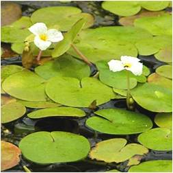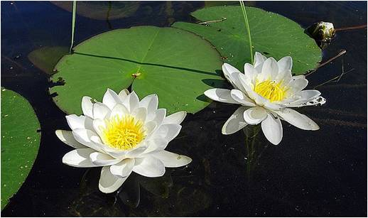
Внаслідок дуже високого рівня обводненості території водна рослинність є провідною у формуванні рослинного покриву. Так, у водах річок Прип'яті і Стоходу частими є угрупування з домінуванням глечиків жовтих. Як правило, в річках моновидовими є зарості куги озерної, у каналах часто домінують рдесники, а в заводях — ряски та багатокорінника. На прибережних ділянках формуються зарості їжачої голівки. Зрідка трапляються зарості рогозу та жабурника. Трапляється на цій території латаття сніжно-біле.
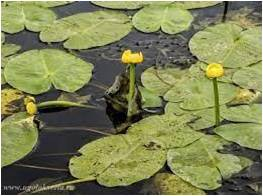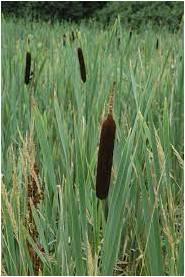
Прибережно-водна рослинність, що утворює густі і високі зарості у заплавах річок та по берегах озер представлена такими видами: очерет звичайний, лепешняк великий та рогіз вузьколистий. Тут також трапляється верба попеляста, плетуха звичайна, паслін солодко-гіркий, м'ята водяна, чистець болотний. Окремими куртинами зростають плакун верболистий, незабудка болотяна, півники болотяні, щавель прибережний. Зрідка трапляються цикута отруйна, пухирник звичайний, вовче тіло болотяне.
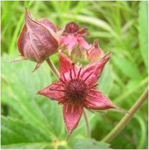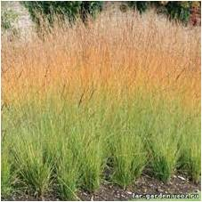
У складі болотних угруповань домінують бореальні види осоки чорна, здута, бліда, пухирчаста, висока. Звичайними видами є пухівка багатоколоскова, теліптерис болотяний. Зрідка трапляються росичка круглолиста, верба Старке.
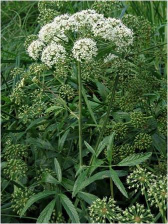
Лучна рослинність трапляється на перехідних ділянках між лісом та болотом, часто в долинах річок чи навколо озер. Трапляються дрібноосокові луки з перевагою осоки звичайної та перстача гусячого, а на прибережних підвищеннях угрупованням з перевагою щучки дернистої. Переважають торф'янисті луки, де домінують молінія блакитна, медова трава шерстиста. Тут також трапляються ценози осок: чорної, жовтої, просоподібної. Менші площі підвищень заплав займають справжні луки, де зростають мітлиця тонка, тонконіг лучний, тимофіївка лучна.
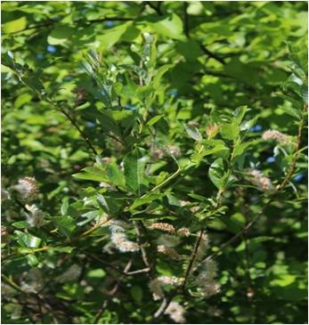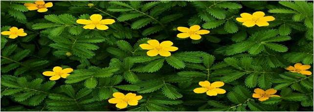
З лісової рослинності тут переважають соснові та вільхові в перемішку з березою ліси, зрідка трапляються чисті березняки, збереглися також фрагменти грабово-дубових насаджень, а на невеликих підвищеннях навколо чагарникових і трав'яних боліт трапляються похідні дубові ліси.
У хвойних лісах зростають чорниця, брусниця, багно болотяне, квасениця звичайна. Звичайними є бореальні види: одинарник європейський, плаун булавоподібний, сухоцвіт лісовий, ожина шорстка та ін. У листяних лісах поширені зірочник лісовий, перлівка поникла, горлянка повзуча, купина багатоквіткова, наперстянка великоквіткова, дзвоники персиколисті та ефемероїди – анемони дібровна і жовтецева, рясти ущільнений та порожнистий.
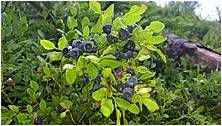
Чагарникова рослинність парку добре виражена і представлена заростями кущоподібних верб на болотах та зрідка — на безлісих піщаних грядах, серед яких домінантами виступають верби попеляста та пурпурова.
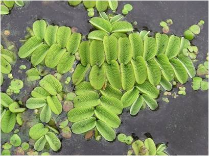
На території району серед боліт, лук та лісів зростає 21 вид рослин, що занесені до Червоної книги України: щитолисник звичайний, який ще донедавна вважався взагалі зниклим з території України, альдрованда пухирчаста, сальвінія плавуча, пальчатокорінники м'ясочервоний, травневий та плямистий, плаун річний, баранець звичайний, лілія лісова, булатка довголиста, зозулині черевички справжні, коручки темно-червона та чемерникоподібна, гніздівка звичайна, любка зеленоквіткова, любка дволиста, осока затінкова та береза низька, а також близько 20-ти регіонально рідкісних видів рослин.
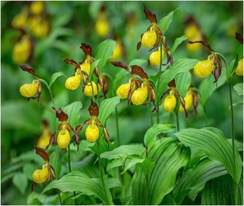
На сьогодні в НПП «Прип'ять-Стохід» зареєстровано 109 видів мохоподібних .Тут обстежені мохи евтрофних і мезотрофних боліт, вільшняків, дубово-грабових лісів, старих дотів. Особливе наукове значення мають в парку евтрофні карбонатні болота, на яких домінує центральноєвропейський вид осока Девелла, а з мохів ростуть дрепаноклади Зендтнера і багатодомний, каліергон гігантський, кампілій зірчастий та ін. З цікавих знахідок слід також відзначити гаматокауліс глянсуватий, занесений до Червоної книги мохоподібних Європи, а також сфагни великий та рожевий, що охороняються у Волинській області.
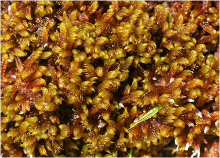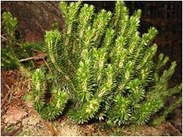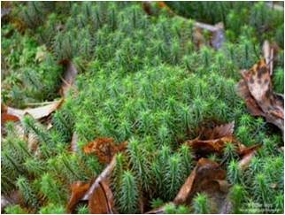